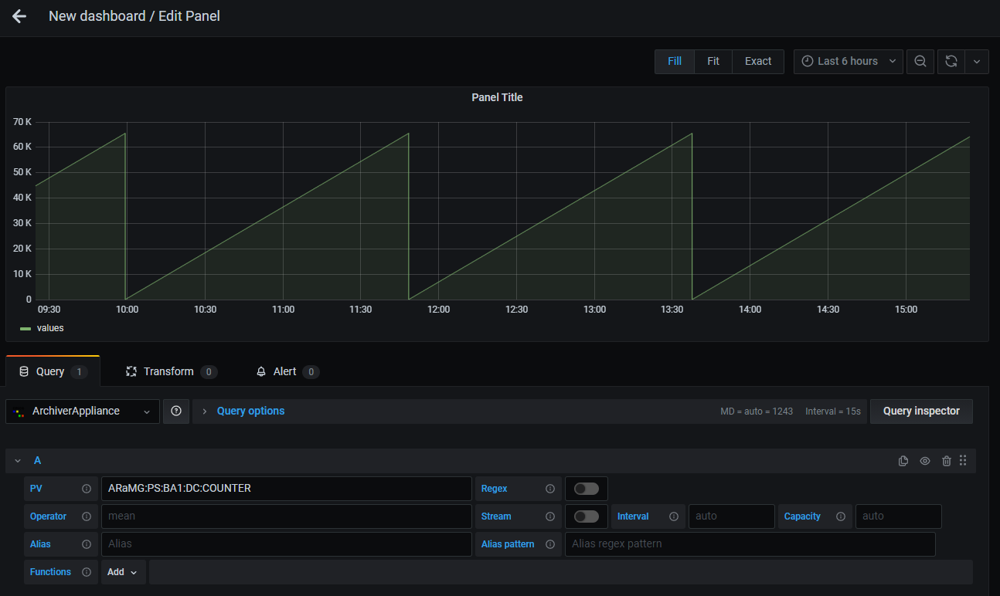

Query Edit
Overview

Configuration |
Description |
|---|---|
PV |
Set PV name to be visualized. It is allowed to set multiple PVs by using Regular Expressoins alternation pattern (e.g. |
Regex |
Enable/Disable Regex mode. Refer Select Multiple PVs by Regex. |
Operator |
Controls processing of data during data retrieval (Default: |
Stream |
Enable/Disable Stream mode. Stream allows to periodically update the data without refreshing the dashboard. Only the updated data from the last updat time will be retrieved. |
Interval |
Streaming interval in milliseconds. You can also use a number with unit. e.g. |
Capacity |
The stream data is stored in a circular buffer. Capacity determines the buffer size. The default is detemined by a initial data size. |
Alias |
Set alias for legend. |
Alias pattern |
Set regular expressoin pattern to use PV name for legend alias. Refer Legend Alias with Regex Pattern |
Function |
Apply processing function for retrieved data. Refer Apply Processing Functions |
PV Name Completion

Candidate PV names are shown during focussing on PV text input.
Note
Maximum number of candidate names is 100.
Select Multiple PVs by Regex
You can select multiple PVs using Regular Expressoins.
To enable Regex mode, click Regex button next to PV text input.
The plugin supports only wildcard pattern and alternation pattern.
Note
Maximum number of PVs you can select on Regex mode is 100 in default. maxNumPVs function is available to change maximum number.
Wildcard Pattern
Wildcard pattern (e.g. .*) is used to match any characters.
For example, PV:.* matches PV:1, PV:2, PV:ABC:1, PV:ABC:2. and PV:EFG:1.

Result of above query is shown below.

Alternation Pattern
Alternation pattern (e.g. (A|B|C)) is used to OR matching.
For example, PV:(ABC|EFG):.* matches PV:ABC:1, PV:ABC:2, and PV:EFG:1.

Result of above query is shown below.

Legend Alias with Regex Pattern
You can set legend alias using target PV name with Alias pattern.
Alias pattern is used to match PV name. Matched characters within parentheses can be used in
Alias text input like $1, $2, …, $n.
To escape characters, two backslashes is required before the characters (e.g. \\.).

Result of above query is shown below.

Apply Processing Functions
Functions are used to apply post processing to the data.
You can add, move and remove functions from Functions row.
Functions are categorized into some groups.
Select preffered functions from categoires.

Some functions require parameters. You can edit parameters after adding the function.
To see details of each function, refer Functions.

Note
Functions are applied from left to right.
Alerts
The plugin supports alerts. Alerts allow you to notify and identify problems.
You can create alerts on Alert tab.
See Grafana Documentation for more information about alerts.
Note
Go backend included in the plugin reteives archived data from Archiver Appliance to calculate alert condition.